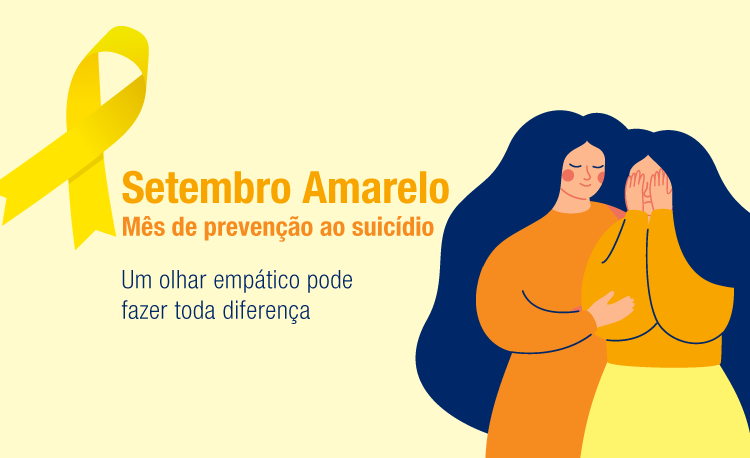

⚠️ATENÇÃO⚠️
Compromisso e Cuidado com os nossos Leitores
Nós da Papel News, temos uma missão que vai além de informar. Nós preocupamos genuinamente com o bem-estar de nossos leitores e buscamos oferecer não apenas notícias, mas também apoio e conscientização. Entendemos que cada pessoa que nos lê é parte de nossa grande família editorial.
Setembro é um mês emblemático para nós, marcado pela campanha de prevenção ao suicídio. É um período para reforçar a importância da saúde mental e do diálogo aberto sobre ansiedade e depressão. Sabemos que esses são desafios reais enfrentados por muitos e queremos estar ao seu lado, oferecendo palavras que confortam e informam.
Recomendamos que, ao sentir qualquer sintoma de ansiedade ou depressão, não hesite em buscar ajuda. Falar com alguém de confiança, seja um amigo ou familiar, pode ser o primeiro passo para encontrar suporte. Além disso, profissionais da saúde, como psicólogos, estão preparados para oferecer a assistência necessária.
Sua vida é preciosa! Queremos contribuir para que você encontre motivos para sorrir todos os dias. Por isso, nos dedicamos a criar conteúdos que informam, educam e inspiram. Estamos juntos nessa jornada, valorizando cada história e cada leitor.
Sua vida é valiosa e queremos vê-lo sorrir! 😁
Estamos aqui não apenas para trazer informações, mas para lembrar que você não está sozinho. 🙃
Tecnologia👨💻
A Revolução Temporal: Cientistas Desenvolvem o Primeiro Protótipo de Relógio Nuclear do Mundo
No avanço contínuo da ciência e tecnologia, uma equipe internacional de pesquisadores alcançou um marco histórico: a criação do protótipo do primeiro relógio nuclear do mundo. Este dispositivo promete revolucionar a maneira como medimos o tempo, elevando a precisão a um patamar nunca antes alcançado.
O estudo, publicado na renomada revista Nature, detalha o funcionamento deste relógio inovador que, ao contrário dos relógios atômicos tradicionais que dependem da alternância dos estados de energia dos elétrons, baseia-se diretamente nas transições energéticas do núcleo de um átomo. A precisão deste novo relógio nuclear advém da estabilidade do núcleo atômico, que é menos suscetível a interferências externas, como campos magnéticos, em comparação com os elétrons que orbitam o núcleo.
O coração deste relógio é o tório-229, um isótopo que, por décadas, intrigou físicos devido à sua capacidade de alcançar estados excitados com uma quantidade de energia significativamente menor do que outros núcleos atômicos. A equipe de pesquisa utilizou um laser ultravioleta especialmente projetado para capturar com precisão a frequência de um salto de energia nos núcleos de tório embutidos em um cristal sólido. Além disso, um pente de frequência óptica foi empregado para contar o número de ciclos de ondas ultravioleta, uma técnica que contribui para a precisão sem precedentes do relógio.
Os relógios atômicos atuais, que são fundamentais para GPS e outras tecnologias de sincronização de tempo, utilizam átomos de césio e micro-ondas para marcar o tempo. No entanto, os relógios nucleares, ao operarem em frequências mais altas, como as de raios ultravioleta, têm o potencial de serem centenas de vezes mais precisos do que os melhores relógios atômicos ópticos existentes.
A descoberta representa não apenas um feito notável na cronometragem, mas também abre portas para novas investigações em física fundamental. A precisão extrema do relógio nuclear poderá permitir aos cientistas testar teorias físicas com um nível de detalhe sem precedentes, possivelmente revelando novos fenômenos no universo quântico.
Embora o protótipo atual ainda não seja um relógio nuclear funcional, ele serve como uma prova de conceito que pode inspirar o desenvolvimento de relógios atômicos ópticos ainda mais precisos. Este avanço é um testemunho da busca incessante da humanidade por conhecimento e compreensão do tecido do tempo e do espaço, e marca o início de uma nova era na cronometragem de precisão.
Este desenvolvimento é um lembrete fascinante de como a ciência, em sua essência, é movida pela curiosidade e pelo desejo de explorar o desconhecido. À medida que continuamos a avançar em nossa compreensão do universo, cada descoberta nos aproxima de respostas para algumas das questões mais profundas da existência. O relógio nuclear é mais um passo nessa jornada extraordinária, um passo que ressoa com o tique-taque constante do progresso humano.
Economia💰
Mercado Financeiro Semanal - Queda do Dólar e Alta do Ibovespa Sob o Microscópio
A semana financeira foi marcada por uma notável queda do dólar frente ao real, encerrando um período de volatilidade e incertezas econômicas. A moeda norte-americana, que havia avançado 0,35% na sexta-feira anterior, cotada a R$ 5,5900, experimentou uma diminuição, refletindo uma série de eventos tanto no cenário nacional quanto internacional.
Por outro lado, o Ibovespa, principal índice acionário da bolsa de valores brasileira, apresentou um comportamento inverso, registrando uma elevação após um recuo de 1,41%, situando-se nos 134.572 pontos. Este movimento ascendente do índice pode ser interpretado como um sinal de otimismo por parte dos investidores, que reagem às dinâmicas do mercado e às políticas econômicas vigentes.
Os fatores que influenciaram essas oscilações são múltiplos. Dentre eles, destacam-se os dados recentes de inflação e as expectativas em torno das reuniões sobre juros, tanto do Banco Central do Brasil (BC) quanto do Federal Reserve (Fed, o banco central americano). O mercado financeiro, sempre atento às projeções do Boletim Focus, acompanhou com interesse as revisões para cima nas estimativas de inflação e PIB para o ano de 2024.
A política monetária desempenha um papel crucial nesse contexto. Com a inflação acelerando nos últimos meses e o aumento contínuo das projeções de alta para os preços, cresce a possibilidade de que o Copom eleve a taxa Selic para conter a pressão inflacionária. Atualmente, a Selic está em 10,50% ao ano, um patamar elevado que resulta de uma série de cortes anteriores.
O mercado também está de olho nos Estados Unidos, onde há sinais de que o Fed possa iniciar um ciclo de cortes nos juros, o que teria repercussões globais. Além disso, a economia americana tem mostrado sinais de desaceleração, com a geração de empregos abaixo do esperado e uma taxa de desemprego que, embora baixa para os padrões americanos, aumentou para 4,3%.
Em resumo, a semana foi de cautela e análise para os investidores, que buscam entender as tendências e se antecipar às decisões dos bancos centrais. O comportamento do dólar e do Ibovespa reflete não apenas as condições econômicas internas do Brasil, mas também as expectativas em relação à economia global. À medida que novos dados são divulgados e as políticas são ajustadas, o mercado financeiro permanece em constante movimento, sempre buscando equilibrar riscos e oportunidades.
Saúde🧠
Setembro Amarelo e o SUS - Uma Jornada de Prevenção e Desestigmatização do Suicídio
O mês de setembro é marcado por uma campanha vital para a saúde pública e o bem-estar social: o Setembro Amarelo. Esta iniciativa, que ganha força a cada ano, tem como objetivo principal a prevenção do suicídio e a redução do estigma associado às doenças mentais. No Brasil, o Sistema Único de Saúde (SUS) desempenha um papel crucial nesta luta, implementando e apoiando práticas exitosas que têm mostrado resultados promissores.
A campanha deste ano, sob o lema "Se precisar, peça ajuda!", ressalta a importância do diálogo aberto e do apoio mútuo em momentos de crise. A escolha do lema reflete uma compreensão crescente de que o silêncio pode ser um obstáculo significativo para aqueles que buscam ajuda. O Ministério da Saúde do Brasil destaca que aproximadamente 12 mil suicídios são registrados anualmente no país, com um impacto desproporcional sobre os jovens. Entre as pessoas de 15 a 29 anos, o suicídio figura como a quarta principal causa de morte, sucedendo acidentes de trânsito, tuberculose e violência interpessoal.
Os dados são alarmantes e revelam um aumento de 49,3% nas taxas de mortalidade por suicídio entre adolescentes de 15 a 19 anos, e de 45% entre aqueles de 10 a 14 anos, no período entre 2016 e 2021. Esses números sublinham a complexidade do fenômeno do suicídio, que frequentemente está relacionado a transtornos mentais como depressão, transtorno bipolar e abuso de substâncias.
Neste contexto desafiador, o SUS tem se destacado ao promover 33 práticas exitosas focadas na saúde mental, prevenção ao suicídio e combate ao estigma. Uma dessas práticas é a Rede de Atenção e Prevenção ao Suicídio de Anastácio, em Mato Grosso do Sul, que desde 2017 opera com base em três pilares fundamentais: prevenção, atenção e pósvenção. Esta e outras experiências são detalhadas no livro "Fiocruz é SUS: rodas de saberes, práticas compartilhadas", que está disponível para download gratuito.
Além disso, a Plataforma IdeiaSUS Fiocruz tem contribuído para a conscientização sobre saúde mental por meio de sua produção audiovisual. A série "Vozes da Saúde", por exemplo, apresenta diversas experiências do SUS, disponíveis no canal da IdeiaSUS no YouTube. Um dos episódios, "Saúde Mental em movimento: mais acessos, novos cuidados", destaca uma iniciativa em Araruama, Rio de Janeiro, que busca levar os serviços de saúde mental para além dos muros das unidades de saúde, aproximando-os da comunidade.
O Setembro Amarelo é uma campanha de conscientização que visa não apenas prevenir o suicídio, mas também promover uma mudança cultural em relação à saúde mental. As iniciativas do SUS exemplificam como ações concretas e a disseminação de informações responsáveis podem contribuir significativamente para esse objetivo. Ao destacar essas práticas exitosas, a campanha reforça a mensagem de que a prevenção é possível e que o estigma pode ser superado com empatia, compreensão e apoio.
⚠️ATENÇÃO⚠️
Compromisso e Cuidado com os nossos Leitores
Nós da Papel News, temos uma missão que vai além de informar. Nós preocupamos genuinamente com o bem-estar de nossos leitores e buscamos oferecer não apenas notícias, mas também apoio e conscientização. Entendemos que cada pessoa que nos lê é parte de nossa grande família editorial.
Setembro é um mês emblemático para nós, marcado pela campanha de prevenção ao suicídio. É um período para reforçar a importância da saúde mental e do diálogo aberto sobre ansiedade e depressão. Sabemos que esses são desafios reais enfrentados por muitos e queremos estar ao seu lado, oferecendo palavras que confortam e informam.
Recomendamos que, ao sentir qualquer sintoma de ansiedade ou depressão, não hesite em buscar ajuda. Falar com alguém de confiança, seja um amigo ou familiar, pode ser o primeiro passo para encontrar suporte. Além disso, profissionais da saúde, como psicólogos, estão preparados para oferecer a assistência necessária.
Sua vida é preciosa! Queremos contribuir para que você encontre motivos para sorrir todos os dias. Por isso, nos dedicamos a criar conteúdos que informam, educam e inspiram. Estamos juntos nessa jornada, valorizando cada história e cada leitor.
Sua vida é valiosa e queremos vê-lo sorrir! 😁
Estamos aqui não apenas para trazer informações, mas para lembrar que você não está sozinho. 🙃